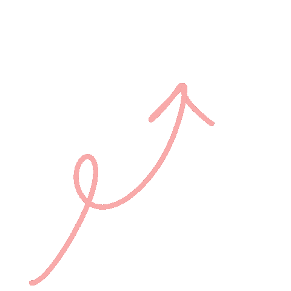

<mat-toolbar>
  <h3>Welcome to phase2 🤪</h3>
  <div class="spaces"></div>
</mat-toolbar>
<div fxLayoutAlign="center center">
  <div class="main-container" fxLayout="row wrap" fxLayoutAlign="space-between start">
    <div class="card" matRipple [routerLink]="['/cheatsheet','nx_architecture']" fxFlex="30%" fxFlex.lt-md="45%"
      fxFlex.lt-sm="95%" fxLayoutAlign="space-around center">
      Nx Architecture</div>
    <div class="card" matRipple [routerLink]="['/cheatsheet','unit_testing']" fxFlex="30%" fxFlex.lt-md="45%"
      fxFlex.lt-sm="95%" fxLayoutAlign="space-around center">
      Unit Testing</div>
    <div class="card" matRipple [routerLink]="['/cheatsheet','e2e_testing']" fxFlex="30%" fxFlex.lt-md="45%"
      fxFlex.lt-sm="95%" fxLayoutAlign="space-around center">
      E2E Testing</div>
    <div class="card" matRipple [routerLink]="['/cheatsheet','sonar_qube']" fxFlex="30%" fxFlex.lt-md="45%"
      fxFlex.lt-sm="95%" fxLayoutAlign="space-around center">
      SonarQube integration</div>
    <div class="card" matRipple [routerLink]="['/cheatsheet','rollbar_integration']" fxFlex="30%" fxFlex.lt-md="45%"
      fxFlex.lt-sm="95%" fxLayoutAlign="space-around center">
      Rollbar integration</div>
    <div class="card" matRipple [routerLink]="['/cheatsheet','themecreation']" fxFlex="30%" fxFlex.lt-md="45%"
      fxFlex.lt-sm="95%" fxLayoutAlign="space-around center">
      Theme & component creation</div>
  </div>

</div>
<!--  -->